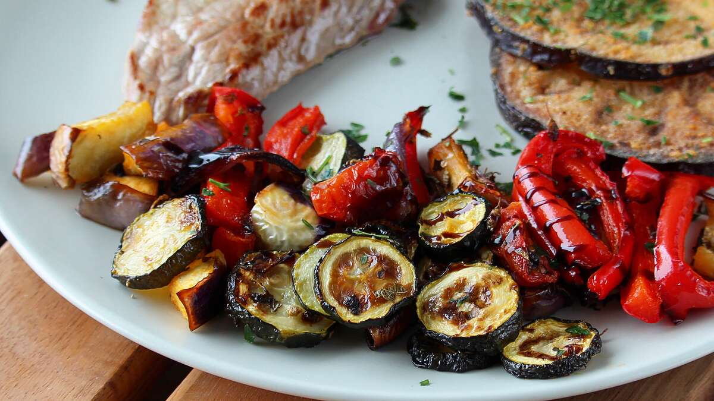

Sheet pan Ratatouille Recipe

Ingredients
- 1 large eggplant, cut into 1/2-inch cubes
- 2 zucchinis, cut into 1/2-inch slices
- 2 heirloom tomatoes, cut in wedges
- 1 white onion, cut into 1/2-inch-thick rounds
- 1 red bell pepper, cut into 1/2-inch strips
- 4 cloves garlic
- 2 tablespoons olive oil
- 2 tablespoons chopped fresh rosemary
- 1 teaspoon salt
- ½ teaspoon ground black pepper
- 1 tablespoon balsamic vinegar
Steps
- Preheat oven to 400 degrees F (200 degrees C). Line a baking sheet with parchment paper.
- Place eggplant, zucchinis, tomatoes, onion, bell pepper, and garlic in a single layer on the prepared baking sheet. Drizzle with olive oil, rosemary, salt, and pepper; toss vegetables until well coated.
- Roast in the preheated oven until slightly tender; about 20 minutes. Mix and roast for another 12 minutes. Reduce heat to 300 degrees F (150 degrees C) and cook until vegetables begin to caramelize; about 10 minutes. Drizzle with balsamic vinegar.